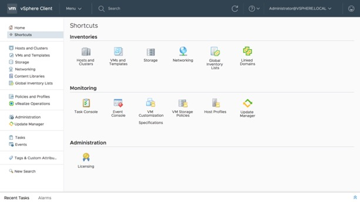

Nova versão do VMware vSphere 6.7 (Live update)
Blog VMwareCompartilhe esse post nas redes sociais...
Olá Homelabers!
Update - 09:50 am - Adicionados links para release notes e downloads das novas versões (no final do post)
Update - 10:00 am - Adicionado link da playlist com vídeos sobre a nova versão 6.7 (no final do post)
A VMware acabou de lançar a versão 6.7 de sua suíte de produtos.
A notícia acabou de ser anunciada e ao longo do dia farei updates nesse post.
Foram anunciados os seguintes produtos em nova versão:
* VMware vSphere 6.7
* VMware vCenter 6.7
* VMware vSphere with Operations Manager 6.7
* Vmware vSAN 6.7

https://blogs.vmware.com/vsphere/launch
Volto em breve com todas as novidades para vocês. Fiquem ligados no meu Twitter para saber das atualizações deste post
Update 09:50am
Lista de links e release notes sobre os lançamentos
vSphere 6.7
* [What's New in vSphere 6.7 (vCenter Server and ESXi)](https://www.vmware.com/go/vsphere67whatsnew)
* [vSphere 6.7 Configuration Maximums](https://configmax.vmware.com/)
* [Release Notes](https://docs.vmware.com/en/VMware-vSphere/6.7/rn/vsphere-esxi-vcenter-server-67-release-notes.html)
* [ESXi Download](https://my.vmware.com/web/vmware/details?productId=614&rPId=22179&downloadGroup=ESXI670)
* [vCenter Server Download](https://my.vmware.com/web/vmware/details?productId=614&rPId=22179&downloadGroup=VC670)
vSphere Update Manager 6.7
* [Release Notes](https://docs.vmware.com/en/VMware-vSphere/6.7/rn/vsphere-update-manager-67-release-notes.html)
Host Client (1.25) 6.7
* [Release Notes](https://docs.vmware.com/en/VMware-vSphere/6.7/rn/vmware-host-client-125-release-notes.html)
VSAN 6.7
* [What's New in VSAN 6.7](https://blogs.vmware.com/virtualblocks/2018/04/17/whats-new-vmware-vsan-6-7/)
* [Release Notes](https://docs.vmware.com/en/VMware-vSphere/6.7/rn/vmware-vsan-67-release-notes.html)
* [Witness Appliance Download](https://my.vmware.com/web/vmware/details?downloadGroup=WITNESS-OVA-67&productId=614)
VMware Site Recovery Manager 8.1
* [Release Notes](https://docs.vmware.com/en/Site-Recovery-Manager/8.1/rn/srm-releasenotes-8-1.html)
* [Download](https://my.vmware.com/web/vmware/details?productId=617&rPId=17333&downloadGroup=SRM81)
VMware vSphere Replication 8.1
* [Release Notes](https://docs.vmware.com/en/vSphere-Replication/8.1/rn/vsphere-replication-81-release-notes.html)
* [Download](https://my.vmware.com/web/vmware/details?productId=614&rPId=22185&downloadGroup=VR81)
vSphere 6.7 Management SDK
* [Download](https://my.vmware.com/web/vmware/details?downloadGroup=VS-MGMT-SDK67&productId=614)
VSAN 6.7 Management SDK
* [Download](https://my.vmware.com/web/vmware/details?downloadGroup=VSAN-MGMT-SDK670&productId=614)
vCenter Server Appliance Management API 6.7
* [Release Notes](https://pubs.vmware.com/Release_Notes/en/developer/vcsa-api/67/vcenter-server-appliance-api-67-release-notes.html)
VMware vSphere Automation SDK for Ruby 6.7
* [Release Notes](https://pubs.vmware.com/Release_Notes/en/developer/vsphere-automation/67/VMware-vSphere-Automation-SDK-for-Ruby-67-Release-Notes.html)
* [Download](https://my.vmware.com/web/vmware/details?downloadGroup=VS-AUTOMATIONSDK-RUBY67&productId=614)
VMware vSphere Automation SDK for Perl 6.7
* [Release Notes](https://pubs.vmware.com/Release_Notes/en/developer/vsphere-automation/67/VMware-vSphere-Automation-SDK-for-Perl-67-Release-Notes.html)
* [Download](https://my.vmware.com/web/vmware/details?downloadGroup=VS-AUTOMATIONSDK-PERL67&productId=614)
VMware vSphere Automation SDK for .NET 6.7
* [Release Notes](https://pubs.vmware.com/Release_Notes/en/developer/vsphere-automation/67/VMware-vSphere-Automation-SDK-for-NET-67-Release-Notes.html)
* [Download](https://my.vmware.com/web/vmware/details?downloadGroup=VS-AUTOMATIONSDK-DOTNET67&productId=614)
VMware vSphere Automation SDK for Java 6.7
* [Release Notes](https://pubs.vmware.com/Release_Notes/en/developer/vsphere-automation/67/VMware-vSphere-Automation-SDK-for-Java-67-Release-Notes.html)
* [Download](https://my.vmware.com/web/vmware/details?downloadGroup=VS-AUTOMATIONSDK-JAVA67&productId=614)
VMware vSphere Automation SDK for Python 6.7
* [Release Notes](https://pubs.vmware.com/Release_Notes/en/developer/vsphere-automation/67/vsphere-automation-sdk-67-python-release-notes.html)
* [Download](https://my.vmware.com/web/vmware/details?downloadGroup=VS-AUTOMATIONSDK-PYTHON67&productId=614)
VMware vSphere Automation SDK for REST 6.7
* [Release Notes](https://pubs.vmware.com/Release_Notes/en/developer/vsphere-automation/67/vsphere-automation-sdk-67-rest-release-notes.html)
* [Download](https://my.vmware.com/web/vmware/details?downloadGroup=VS-AUTOMATIONSDK-REST67&productId=614)
vSphere Command-Line Interface 6.7
* [Release Notes](https://pubs.vmware.com/Release_Notes/en/vcli/67/vsphere-67-vcli-release-notes.html)
* [Download](https://my.vmware.com/web/vmware/details?downloadGroup=VS-CLI670&productId=614)
vSphere Client SDK 6.7
* [Release Notes](https://pubs.vmware.com/Release_Notes/en/developer/webclient/67/vsphere-client-sdk-67-release-notes.html)
vSphere Web Client SDK 6.7
* [Release Notes](https://pubs.vmware.com/Release_Notes/en/developer/webclient/67/vsphere-web-client-sdk-67-release-notes.html)
* [Download](https://my.vmware.com/web/vmware/details?downloadGroup=WEBCLIENTSDK670&productId=614)
vSphere Solutions Manager, vServices, and ESX Agent Manager 6.7
* [Release Notes](https://pubs.vmware.com/Release_Notes/en/developer/vsphere-mgmt-sdk/67/vsphere-solutions-vservices-esxagent-manager-67-release-notes.html)
VMware CIM SMASH/Server Management API 6.7
* [Release Notes](https://pubs.vmware.com/Release_Notes/en/developer/cim-smash/67/CIM-SMASH-Server-Management-API-Release-Notes.html)
VMware vSphere Virtual Disk Development Kit 6.7
* [Download](https://my.vmware.com/web/vmware/details?downloadGroup=VDDK670&productId=614)
vSphere Guest SDK 1.2
* [Download](https://my.vmware.com/web/vmware/details?downloadGroup=GUESTSDK1020&productId=614)
Update - 10:00 am - Adicionado link da playlist com vídeos sobre a nova versão 6.7
https://www.youtube.com/playlist?list=PLNolXBQS42ixDXWTX3oHph4mZbFptSSPv
Compartilhe esse post nas redes sociais...Valdecir Carvalho
Nerd e pai orgulhoso da Mariana e João. Profissional Sênior de TI com foco em arquitetura de infraestrutura e cloud computing. Blogueiro, podcaster, palestrante, amante de comunidades técnicas, fotógrafo aposentado e adora jogos antigos.
#vExpert · #VMUGLeader · #VUGBrasil · #vBronwBagBrasil · #VeeamVanguard